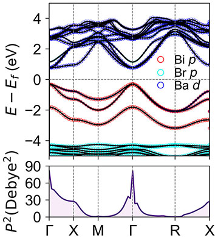
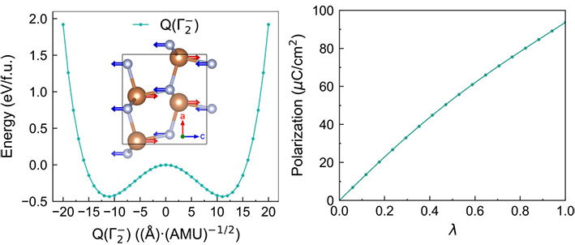
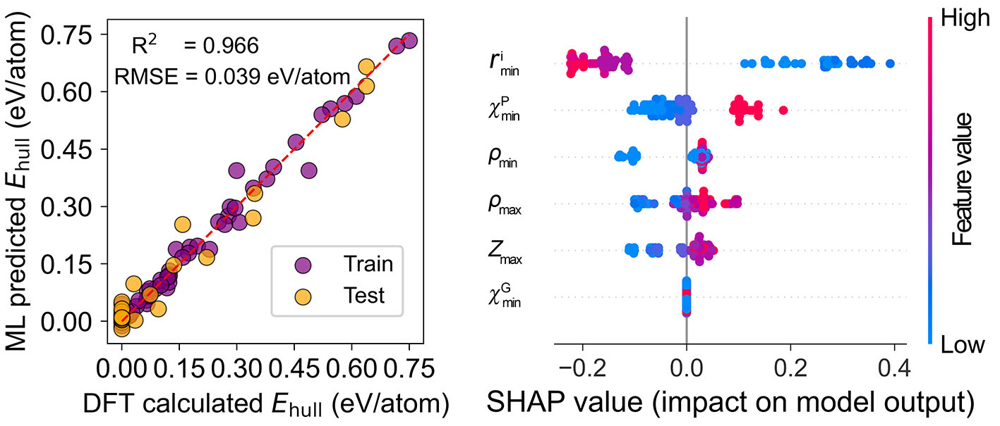

Welcome to the Tang Materials Modeling Group, led by Dr. Gang Tang at Beijing Institute of Technology. Our research focuses on computational materials physics, data-driven approaches, and machine learning to discover new functional materials for applications in photovoltaics, ferroelectrics, piezoelectrics, thermoelectrics, and beyond. We also develop open-source codes to address these challenges. For more details, please visit our Github page.
Research Areas
1. Photovoltaics
We proposed a series of design strategies, including ion type inversion, anion ordering, and atomic-position splitting, to develop a range of novel antiperovskite semiconductors. These antiperovskite materials exhibit excellent optoelectronic properties.
Relevant publication:
Designing antiperovskite derivatives via atomic-position splitting for photovoltaic applications, Mater. Horiz. (2024)
Design of High-Performance Lead-Free Quaternary Antiperovskites for Photovoltaics via Ion Type Inversion and Anion Ordering, J. Am. Chem. Soc. (2021)
2. Ferroelectrics and Piezoelectrics

Nitride semiconductors are garnering significant attention due to their importance in communication and information technologies. Compared to their oxide counterparts, nitrogen-based semiconductors offer several advantages. Nitrogen’s moderate electronegativity and mixed ionic-covalent bonding lead to smaller band gaps in nitride semiconductors. Additionally, the high negative (positive) valence of nitrogen (metal) ions allows for the generation of large polarizations. Our current focus is on investigating the ferroelectric and piezoelectric properties of these nitride semiconductors and uncovering the underlying physical mechanisms.
Relevant publication:
First-principles insights into the ferroelectric, dielectric, and piezoelectric properties of polar Pca21 SbN, Phys. Rev. B (2023)
First-principles study of ferroelectric, dielectric, and piezoelectric properties in the nitride perovskites Ce𝐵N3 (𝐵=Nb, Ta), Phys. Rev. B (2024)
3. Machine Learning

Machine learning (ML) is a powerful tool for accelerating materials discovery. We construct computational databases of material properties and apply ML techniques to extract material descriptors and build correlations between these descriptors and target properties. Our current focus is on applying ML to predict complex tensor properties, such as dielectric and piezoelectric properties in crystalline materials. In addition, we are also using machine learning potentials (MLP) to perform large-scale simulations to uncover new physical phenomena in materials.
Relevant publication:
Machine-learning-assisted discovery of 212-Zintl-phase compounds with ultra-low lattice thermal conductivity, J. Mater. Chem. A (2024)